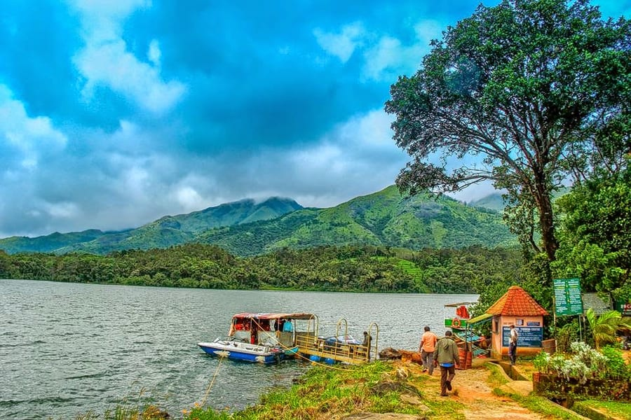
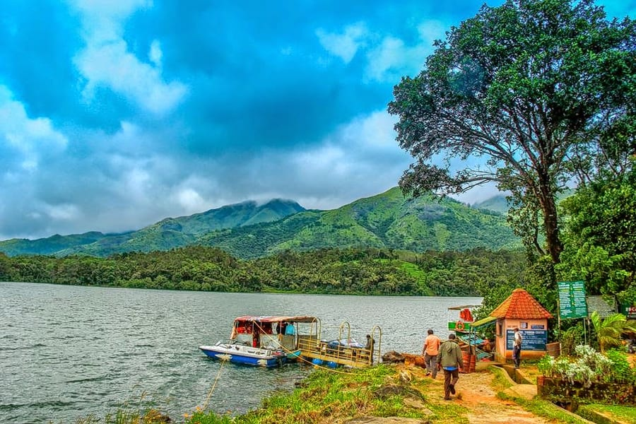

Top destinations in Malappuram
There are a number of elements that make up the city of Malappuram a favorite among tourists.Apart from being a beautiful green addition on the map of God’s Own Country, Malapuram is a city that has seen an extensive history in the past and has developed through it.
The Kadalundi Bird Sanctuary or the Kadalundi Nagaram, is definitely one of the best places to visit in Malappuram. It sits right at the spot where River Kadalundi Puzha flows into the Arabian Sea.Easily accessible from Malappuram and Kozhikode, the bird sanctuary is host to about 100 species of native birds, and about 60 species of migratory birds
A basin at the base of waterfalls where people can enjoy a dip in the pond is something everyone wants to have an experience. Keralam Kundu Waterfalls are undoubtedly the best of all Malappuram Tourist Places, and that is why people keep flocking here to have an experience of the mystical.


Another attraction of Malappuram that is often compared to the famous town of Ooty, Kodikuthimala is definitely a sight for the sore eyes. A hill station of Kerala, the place is perched on a height of about 522 m above sea level, and is the highest point in the Amminikkadan hills.
Nilambur is famous for their teak produce, which is a kind of tree used for woodwork and is easily available throughout the country. Kerala, however, is one of the biggest providers of teak in the country, and this museum in the Nilambur district is entirely dedicated to the history of the wood.

A natural cascading waterfall, the Adyanpara is counted amongst the best of Malappuram tourist places. Located in in the Kurmbalangodu village of Nilambur district near Malappuram, the waterfalls are a seasonal delight.